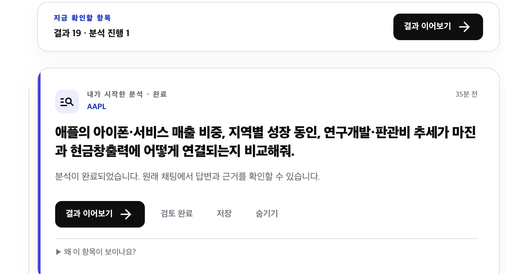
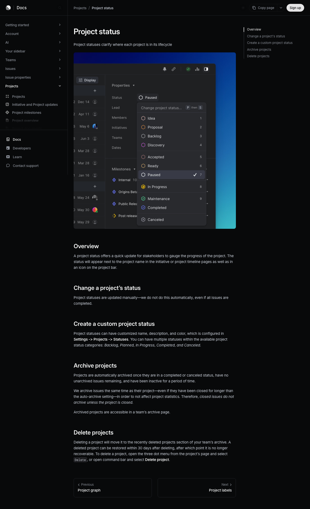
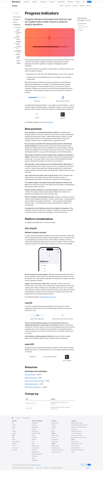

피드의 “분석 진행 중” 상태 분리
대상 화면: KRW.O 피드 상단 요약과 분석 카드
현재 상태


개선안
1. 진행 중 질문을 첫 번째 독립 카드로 배치 ⭐
진행 중인 분석이 하나라도 있으면 완료 카드보다 먼저, 단 하나의 “진행 중” 카드로 노출한다. 상단 요약 바는 없애고, 완료된 결과는 아래의 일반 피드 카드로만 남긴다. 사용자는 “지금 내 분석이 살아 있다”는 사실과 다시 들어갈 위치를 한 번에 알 수 있다.
분석 진행 중
AAPL · 근거 확인 및 답변 정리 중
아이폰·서비스 매출 비중과 현금창출력의 연결을 비교해줘
┌──────────────────────────────────────────────────────┐
│ ● 분석 진행 중 │
│ AAPL · 근거 확인 및 답변 정리 중 │
│ 아이폰·서비스 매출 비중과 현금창출력의 연결… │
│ [대화로 돌아가기] │
└──────────────────────────────────────────────────────┘
┌──────────────────────────────────────────────────────┐
│ 내가 시작한 분석 · 완료 · 35분 전 │
│ AAPL · 애플의 … 비교해줘 │
│ 분석이 완료되었습니다. [결과 이어보기]│
└──────────────────────────────────────────────────────┘
2. 티커가 아닌 상태 표시만 미세하게 움직이기
AAPL 글자나 질문 제목은 정적으로 둔다. 티커가 움직이면 시세 변화나
강조 링크처럼 읽힐 수 있다. 대신 티커 위/옆의 8px 상태 점 또는 48px 이하의
짧은 indeterminate 선을 1.6~2.0초 주기로 부드럽게 움직인다. 애니메이션을 끈
사용자는 고정 점으로 보이게 한다.
상태 점: 8px 보라 점 + 4px 옅은 halo, opacity 0.65 → 1 → 0.65
진행선: 48px track 안에서 16px segment가 좌→우 이동
문구: “분석 진행 중” + 실제로 관측 가능한 단계만 표시
금지: “72% 완료”, “거의 끝났어요”처럼 산출 근거 없는 진척도
Apple과 Material은 완료 시간을 알 수 없는 작업에는 indeterminate indicator를, 알 수 있을 때만 determinate progress를 권장한다. Apple은 또한 모션이 멈추면 멈춘 작업처럼 보일 수 있으므로, 상태가 지속되는 동안 일관된 위치에서 움직임을 보여주라고 안내한다.
3. 카드 상태와 행동을 명확히 분리
| 상태 | 표시 | 행동 |
|---|---|---|
| 진행 중 | 보라 상태 점, “분석 진행 중”, 현재 단계 | “대화로 돌아가기”만 노출 |
| 완료 | 중립 텍스트 “완료”, 완료 시각 | “결과 이어보기”, 검토·저장·숨기기 |
| 실패/중단 | 정지된 경고 아이콘, 짧은 원인 | “다시 시도” 또는 “대화 열기” |
적용 규칙
- 진행 중 카드가 0개면 진행 영역 자체를 렌더링하지 않는다.
- 동시에 여러 개면 최대 2개만 보이고, 나머지는 “진행 중인 분석 n개”로 접는다.
- “근거 수집 중 / 비교 중 / 답변 정리 중”은 백엔드 run 단계가 실제로 있을 때만 쓴다. 없으면 “분석 진행 중”만 쓴다.
prefers-reduced-motion: reduce에서는 모션을 끄고 상태 점을 고정한다.
참고한 패턴
